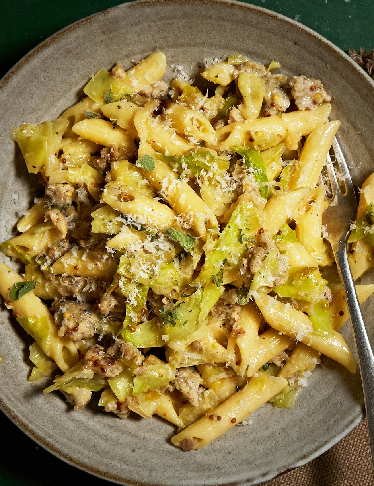

Home-Page
Charred Hispi Cabbage & Sausage Pasta
CHECK OUT PICTURE BELOW

Ingredients
- 1 tbsp olive oil
- 4 sausages, skins removed
- 300g penne or short pasta
- 1 small hispi cabbage, roughly chopped into small pieces
- 1 garlic clove, finely sliced
- 2 oregano sprigs, leaves picked
- 100g crème fraîche
- 1 tsp wholegrain mustard
- 30g parmesan, finely grated
Preparation
- Heat a wide frying pan over medium heat and pour in the olive oil.
- Squeeze the sausagemeat into the pan, crumbling it into small pieces with a spatula.
- Cook the sausage for 5-6 mins until golden and charred, then remove with a slotted spoon.
- Cook the pasta in a separate pan of boiling salted water according to pack instructions.
- In the sausage pan, cook the cabbage for 6-7 mins over medium-high heat until charred in spots.
- Stir the garlic and oregano into the cabbage, then return the cooked sausage to the pan.
- Drain the pasta, reserving 2-3 ladlefuls of the cooking water.
- Stir the crème fraîche, mustard, and reserved pasta water into the cabbage and sausage.
- Add the pasta and most of the parmesan, mixing well to loosen the sauce.
- Serve immediately with the remaining parmesan sprinkled on top.
ENJOY YOUR MEAL!
Contact Author on Discord@username: udu_simeon
Have a great day!
Go Back To Homepage